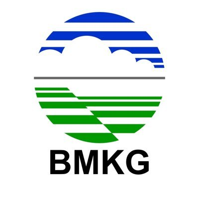
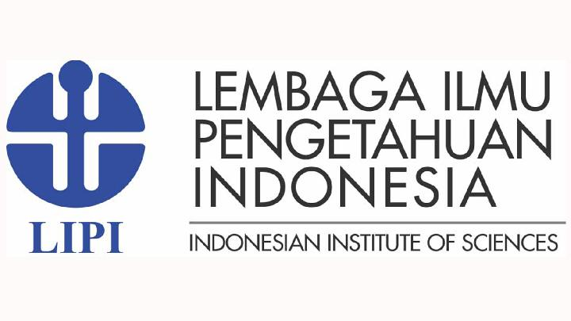
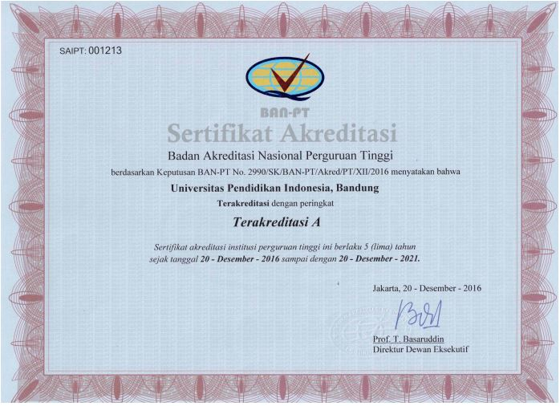
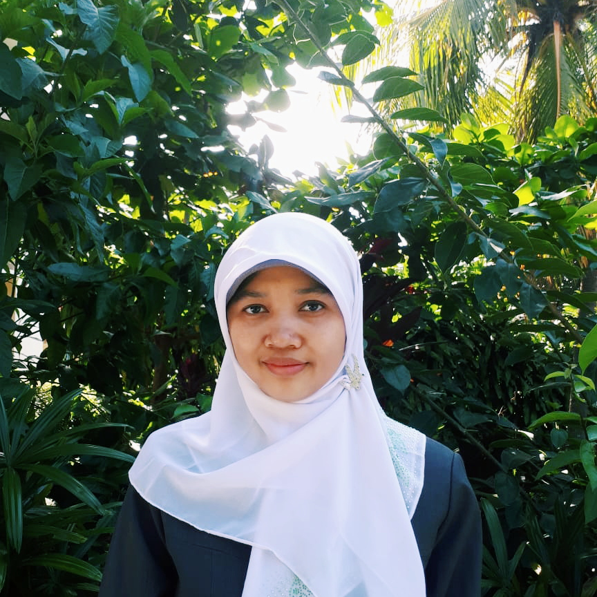
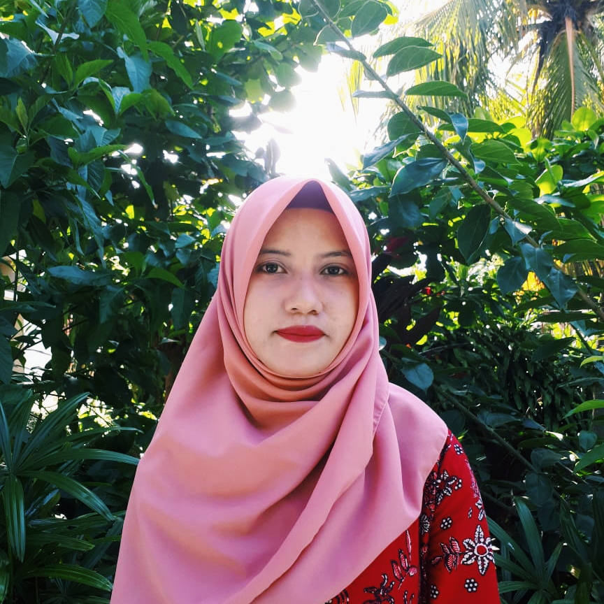
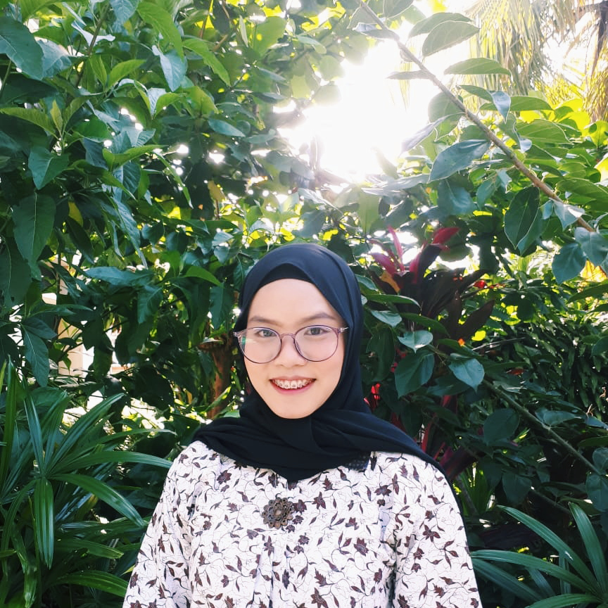
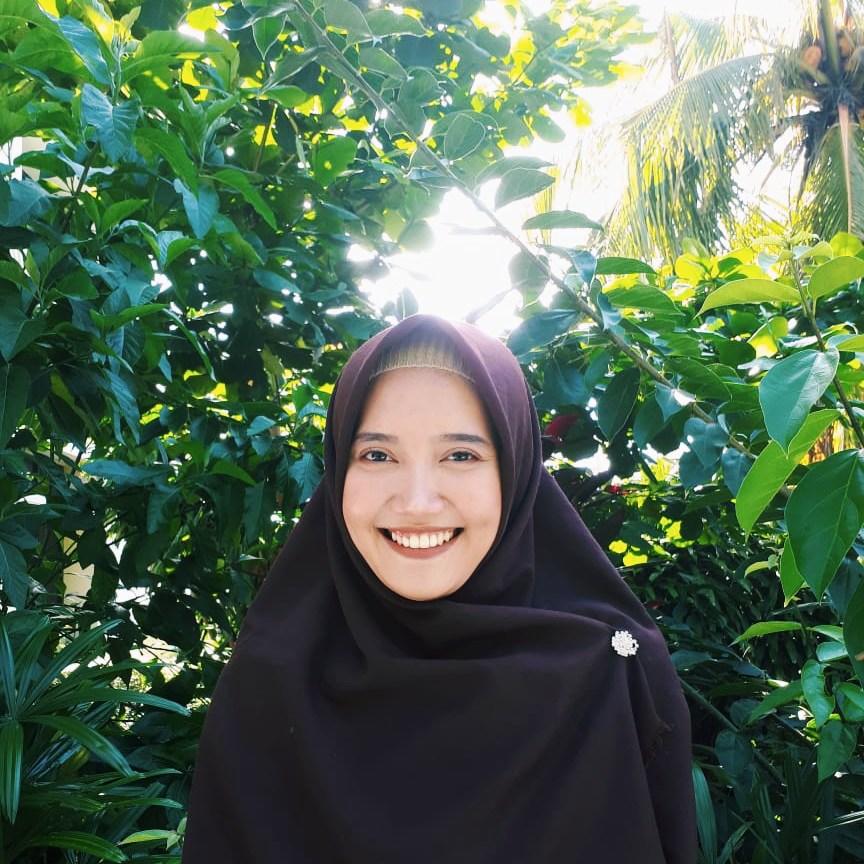
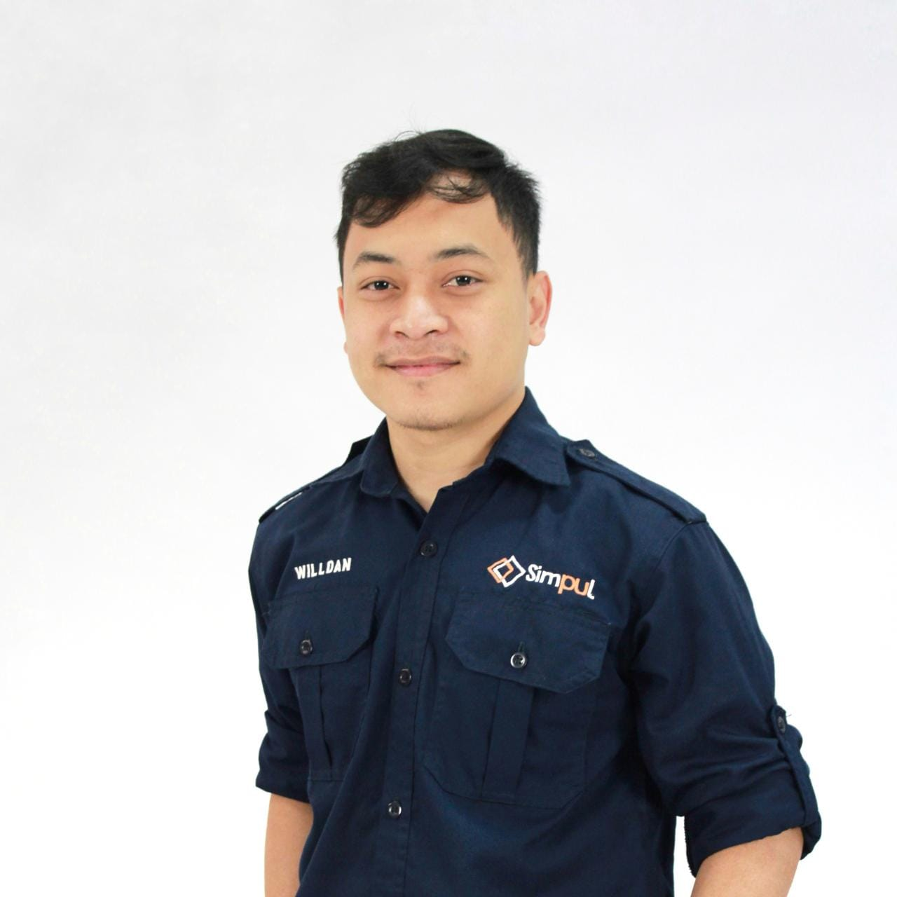
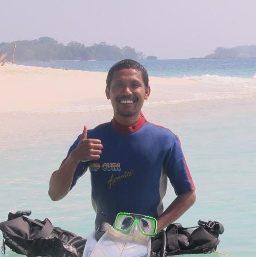

PROFIL
Sistem Informasi adalah ilmu yang mengintegrasikan rumpun ilmu komputer serta turunannya kedalam proses bisnis dan manajemen. Dalam Sistem Informasi kamu akan belajar untuk mengamati masalah, mengidentifikasi dan memberikan kesimpulan berdasarkan atas data-data yang diperoleh ketika mengamati sebuah masalah yang nantinya digunakan untuk pengambilan keputusan (Dicision Support System) bagi perusahaan. Selain itu Belajar Sistem Informasi dituntut untuk dapat merancang sistem (Framework) yang sesuai dengan kebutuhan. Jadi selain belajar teknik pemrograman, kamu juga dituntut untuk mempelajari proses bisnis dan manajemen.
Indonesia sedang berupaya untuk menjadi poros Maritim dunia. Untuk itu maka pembangunan di sektor Kemaritiman saat ini menjadi salah satu fokus utama Pemerintah, selain itu sektor ini pula perlu beradaptasi dengan Revolusi Industri 4.0. Maka dari itu Sumberdaya Manusia yang terampil di bidang Sistem Informasi Kelautan akan sangat diperlukan untuk menjembatani dunia Kelautan dan Teknologi dalam upaya pembangunan di sektor kemaritiman. Berikut merupakan beberapa prospek kerja lulusan Sistem Informasi Kelautan
- Peneliti (Researcher)
- Consultantt
- Information System Analyst
-
01 Mampu mengidentifikasi, menganalisis, merumuskan, melaporkan dan merekomendasikan masalah-masalah dan penyelesaian di bidang sistem informasi kelautan baik dalam lingkup kegiatan penelitian maupun penerapan.
-
02 Menguasai pengetahuan tentang teknologi komunikasi terkini dan aplikasinya untuk mendukung wirausaha, riset dan meningkatkan kinerja
-
03 Menguasai teknologi informasi, pemodelan dan pemrograman kelautan, instrumen di kelautan, metode survey dan analisis data, penginderaan jauh, sistem informasi geografi, dan penulisan karya ilmiah.
-
04 Menguasai bidang aplikasi kelautan, perikanan, oseanografi, meteorologi dan klimatologi, serta metodologi penelitian

Terakreditasi "A"
Akreditasi merupakan kegiatan penilaian untuk menentukan kelayakan Program Studi dan Perguruan Tinggi. Universitas Pendidikan Indonesia (UPI) salah satu Perguruan Tinggi Negeri di Indonesia yang berdiri sejak tahun 1954. UPI berawal dari sebuah Perguruan Tinggi Pendidikan Guru yang telah mengalami metamorfosis hingga menjadi salah satu Perguruan Tinggi Negeri Berbadan Hukum di Indonesia dengan Akreditasi Universitas A.
Mahasiswa Angkatan 2021 82
Mahasiswa Angkatan 2020 76
Mahasiswa Angkatan 2019 46
Download
Dokumen vital yang dapat diunduh untuk pemenuhan program studi
HIMATASKA
Himpunan Mahasiswa Sistem Informasi Kelautan (HIMATASKA) merupakan salah satu bentuk organisasi yang menjadi wadah bagi pengembangan soft skill mahasiswa Sistem Informasi Kelautan. Himataska memiliki 3 program unggulan yaitu MATAKA, HEARING, dan HERMINIA

{kind=link}
{kind=link}
Dosen
Dosen Program Studi Sistem Informasi Kelautan (SIK) Universitas Pendidikan Indonesia (UPI) terdiri dari dosen-dosen muda yang professional di bidang Ilmu Kelautan, Perikanan, Sistem Informasi Geografis, Pengindraan Jauh, Oseanografi, Konservasi, Sistem Informasi, Biologi Laut, Ekologi Laut. Sosial Ekonomi, Biosistematika, Mitigasi Bencana, dan bidang lainnya.

NOVI SOFIA FITRIASARI
LEKTOR-
S.Si. - Universitas Padjadjaran (2007)
M.T. - Institut Teknologi Bandung (2010)
NIP. 197811042010122001

AYANG ARMELITA ROSALIA
TENAGA PENGAJAR-
S.Pi. - Institut Pertanian Bogor (2016)
M.Si. - Institut Pertanian Bogor (2018))
NIPTT. 020190219941209201

DELLA AYU LESTARI
TENAGA PENGAJAR-
S.Si. - Universitas Indonesia (2017)
M.Si. - Universitas Indonesia (2018)
NIPTT. 020190219950428201

LUTHFI ANZANI
TENAGA PENGAJAR-
S.Pd. - Universitas Negeri Jakarta (2014)
M.Si. - Institut Pertanian Bogor (2018)
NIPTT. 020190219911202201

WILLDAN APRIZAL ARIFIN
TENAGA PENGAJAR-
S.Pd. - Universitas Pendidikan Indonesia (2016)
M.Kom. - Institut Pertanian Bogor (2019)
NIPT. 920200819940415101
ISHAK ARIAWAN
TENAGA PENGAJAR-
S.Pd. - Universitas Negeri Makasar (2015)
M.Kom. - Institut Pertanian Bogor (2019)
NIPT. 920200819940117102

LA ODE ALAM MINSARIS
TENAGA PENGAJAR-
S.Pi. - Universitas Halu Oleo (2015)
M.Si. - Institut Pertanian Bogor (2019)
NIPT. 920200819900404101
Frequently Asked Questions
Temukan jawaban dari berbagai pertanyaan yang sering diajukan seputar Program Studi Sistem Informasi Kelautan (SIK) UPI oleh calon pendaftar dan calon mahasiswa.
-
Apa saja yang dipelajari di Sistem Informasi Kelautan?
Belajar Sistem Informasi, Sistem Informasi Geografi, Kelautan, dan Perikanan.
-
Apa anak SMK/IPS bisa masuk prodi Sistem Informasi Kelautan?
Anak IPS tidak bisa, yang bisa masuk ke prodi Sistem Informasi Kelautan (SIK) adalah IPA dan SMK Jurusan tertentu. Jurusan SMK yang bisa masuk ke prodi SIK adalah Teknik Geomatika dan Geospasial, Teknik Komputer dan Informatika, Pelayaran Kapal Penangkap Ikan, Perikanan, dan Pengolahan Hasil Perikanan.
-
Apakah harus bisa berenang untuk masuk prodi Sistem Informasi Kelautan?
Tidak harus, nanti akan ada mata kuliah renang untuk melatih mahasiswa berenang.
Contact
Lebih dekat dengan kami!
Lokasi:
Jl. Ciracas No.38, Serang, Kec. Serang, Kota Serang, Banten 42116
Alamat Surel:
sik_kdserang@upi.edu
Telepon:
(0254)200277